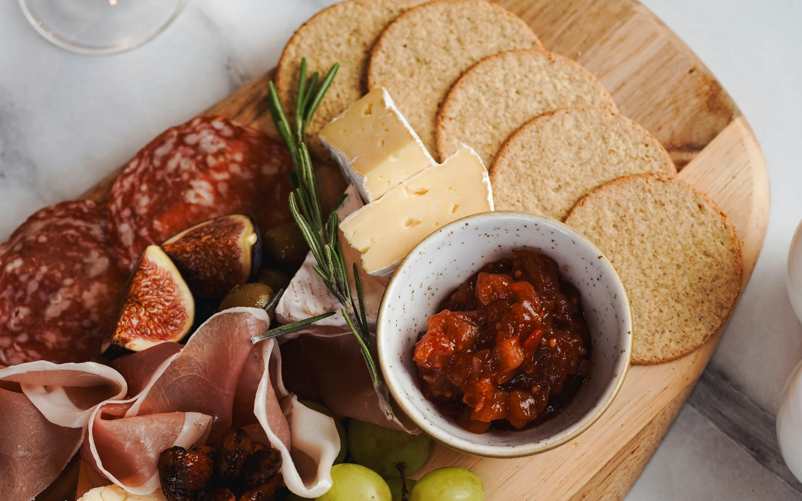
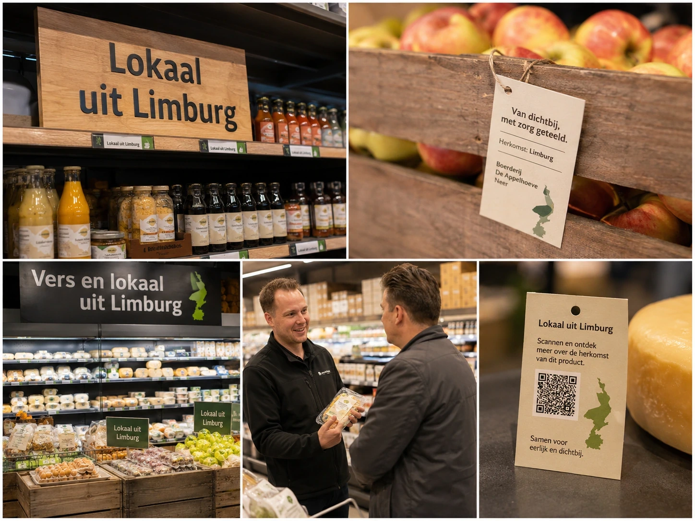

Echte herkomst
Laat zien waar je producten vandaan komen en geef gasten een verhaal bij hun gerecht.
Lokale inspiratie voor MKB-horeca
Ontdek praktische recepten, productideeën, herkenningspunten in de winkel en verhalen waarmee je gasten een echt lokaal verhaal kunt vertellen.


Nieuw voor ondernemers
Lokale producten met een verhaal dat jouw gasten onthouden.
Ontdek streekproducten, leveranciersverhalen en recepten waarmee je jouw menukaart lokaal sterker maakt. Sligro helpt horecaondernemers om lokale smaak eenvoudig toe te passen in hun zaak.
Laat zien waar je producten vandaan komen en geef gasten een verhaal bij hun gerecht.
Gebruik lokale producten om je borrelplank, lunchkaart of dinerkaart onderscheidender te maken.
Combineer lokale inspiratie met het gemak van één vertrouwde foodservicepartner.
Kant-en-klare ideeën voor lunch, borrel, dessert en arrangementen.
02Menukaartteksten, krijtbordkreten en social-postideeën.
03Productcategorieën die snel toepasbaar zijn in je zaak.
04Zo herken je lokaal uit Limburg op schap, krat en display.
05Van teler en medewerker tot collega-ondernemer.

Uitgelicht recept
Een toegankelijke borrelplank met streekkaas, charcuterie, brood, mosterd en seizoensgroenten. Geschikt voor restaurant, café en hotelbar.
Naar het receptConcrete inspiratie

Maak van koffie een lokaal moment met drie kleine smaken en een korte uitleg op de tafelkaart.
Bekijk idee
Een snelle lunchspecial met lokale ingrediënten, passend bij gemak én onderscheid.
Bekijk recept
Laat gasten zien waar het product vandaan komt met QR, tafelkaart of menutekst.
Lees hoeAan de slag
Ontdek producten, recepten en leveranciersverhalen die jouw menukaart meer herkomst en smaak geven.